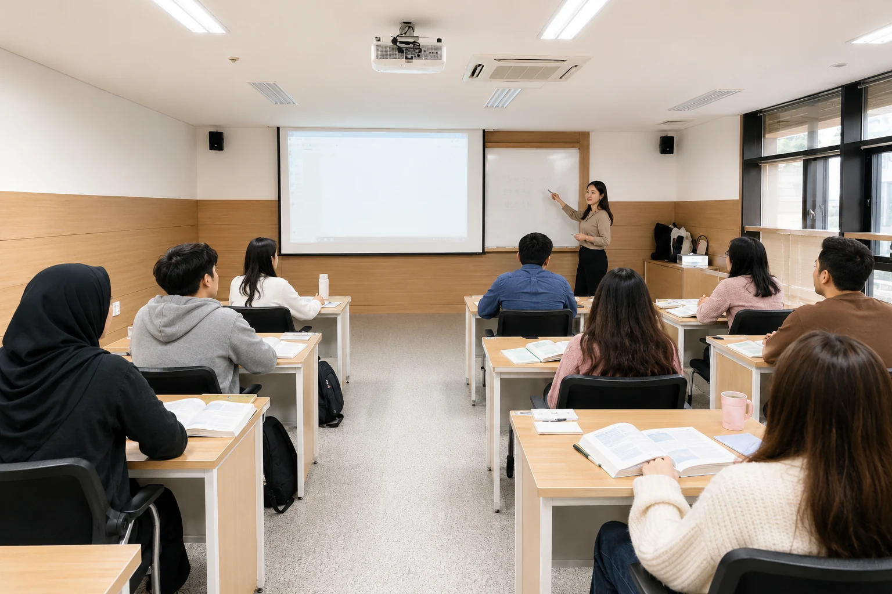
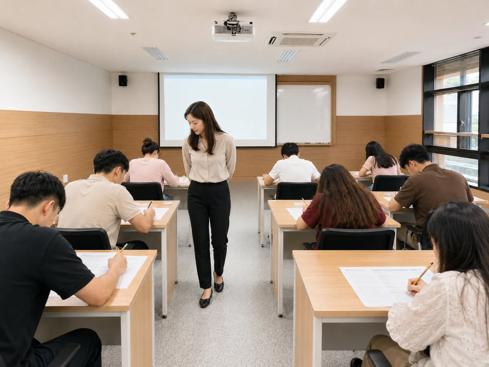

Tổng quan khóa học
Khóa học tiếng Hàn của Trung tâm Giao lưu Quốc tế Donga University of Health được vận hành theo phương thức đào tạo tích hợp, xử lý cân bằng cả bốn kỹ năng nghe, nói, đọc, viết trong cùng một buổi học. Thông qua bài kiểm tra xếp lớp trước khi nhập học, chúng tôi đánh giá trình độ hiện tại của người học và xếp lớp gồm những học viên có trình độ tương đương, giúp bạn tiến từng bước một cách thuận lợi. Bên cạnh việc luyện thi năng lực tiếng Hàn (TOPIK), bạn còn học cả tiếng Hàn thực dụng có thể áp dụng ngay vào việc học chuyên ngành và sinh hoạt tại Hàn Quốc.

Khóa chính quy

Khóa chính quy được cấu thành khoảng 10 tuần cho một học kỳ, mỗi cấp gồm 160~180 giờ. Khi đạt được mục tiêu học tập của mỗi cấp, học viên sẽ lên cấp tiếp theo và có thể hoàn thành tuần tự từ cấp 1 đến cấp 4.
| Cấp độ | Mục tiêu học tập | Số giờ |
|---|---|---|
| Cấp 1 | Làm quen với bảng chữ cái Hangeul và cách phát âm cơ bản, bắt đầu hội thoại hằng ngày bằng các mẫu câu cơ bản như tự giới thiệu, chào hỏi. | 160 giờ |
| Cấp 2 | Sử dụng các mẫu câu cần thiết trong tình huống sinh hoạt như mua đồ, hẹn gặp, tìm đường để tạo và hiểu các câu đơn giản. | 160 giờ |
| Cấp 3 | Nói lên suy nghĩ của mình về các chủ đề xã hội quen thuộc, đọc và viết các bài văn ngắn và chuẩn bị cho TOPIK trung cấp. | 180 giờ |
| Cấp 4 | Sử dụng thành thạo tiếng Hàn cần thiết cho việc học chuyên ngành và đời sống công sở, có thể viết văn logic và thuyết trình. | 180 giờ |
| Học kỳ | Kiểm tra xếp lớp | Khai giảng | Kết thúc |
|---|---|---|---|
| Học kỳ Thu năm 2026 | 2026-09-23 | 2026-09-28 | Sẽ thông báo sau |
| Học kỳ Đông năm 2026 | Sẽ thông báo sau | Sẽ thông báo sau | Sẽ thông báo sau |
| Học kỳ Xuân năm 2027 | Sẽ thông báo sau | Sẽ thông báo sau | Sẽ thông báo sau |
| Học kỳ Hạ năm 2027 | Sẽ thông báo sau | Sẽ thông báo sau | Sẽ thông báo sau |